Windows上使用Shadowsocks教程
Step1.下载Windows下的Shadowsocks软件
shadowsocks-点我下载(支持所有windows)
Step2.下载后解压，解压后运行ShadowsocksR一个2.0一个4.0都是一样的就是所需的.NET版本不一样,随便打开一个
Step3.首次运行，会弹出编辑服务器窗口，根据"我的服务"管理 里面提供的信息，正确填写服务器地址、端口、密码和加密方式，然后点确定
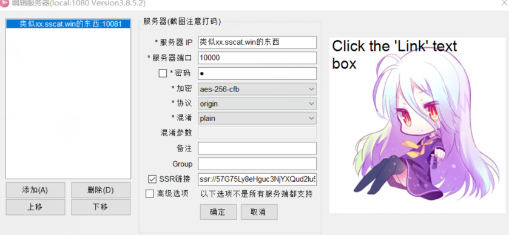
Step4.设置大概如图所示(这只是个例子，具体信息看你自己的)
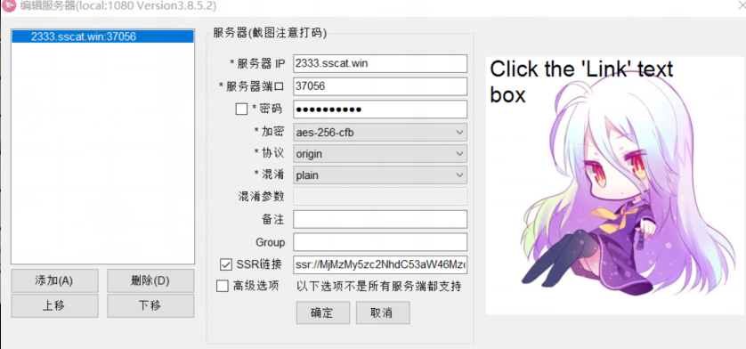
点确定后，软件会缩小到任务栏的右下角(对了记得把默认的那个示范的配置删了)
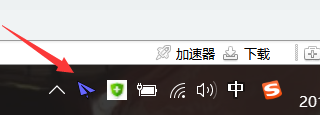
Step5.右键程序图标，弹出主菜单，勾选“启用系统代理”(第一次使用记得在pac哪里更新pac建议更新为GFW这样子被墙的网站才走代理)
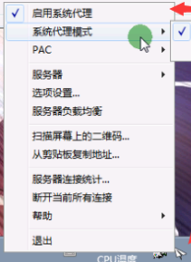
Step6.打开任意浏览器（IE/Chrome/Firefox等），即可开始科学上网
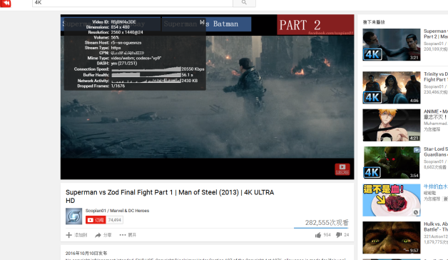
附：无法使用后的简单排除方法
每一个使用过Shadowsocks的人，几乎都会出现过Shadowsocks突然无法使用的情况，然而很多人并不知道怎么办，网上的问题解决方法都是一个个的，不利于新手解决问题，所以我就写一个Shadowsocks无法使用后的简单排除方法。
本教程不一定能 100% 帮你解决Shadowsocks无法使用的问题，但是肯定会有帮助的。
1、确认Shadowsocks账号可用
在开始阅读本教程之前，你的第一步就是先确认你的Shadowsocks账号是否可用（这步很重要！），建议让其他人链接试试，或者其他设备链接试试。
如果别人能用，你却不能用。那就很明显是 你本地电脑设置问题 或者 Shadowsocks客户端 问题。请看 2、本地问题
如果别人都不能使用。那就说明是 Shadowsocks服务端 问题。建议多换介个节点测试下
2、本地问题
再确认别人可以使用你的Shadowsocks账号后，那问题就是 你本地电脑设置问题 或者 Shadowsocks客户端 问题。那么我们就一个个排除。
2.1、Shadowsocks客户端问题
首先，请尽量使用最新的Shadowsocks客户端，鉴于目前 Shadowsocks v3.0原版 因为作者喝茶已经停止更新很长时间了，推荐使用 目前在持续更新的 ShadowsocksR 客户端（很多人换了ShadowsocksR后就可以使用了）。
下载地址：SSR下载
对了，还有一点。Shadowsocks账号信息 记得检查一下，说不定多了个空格或者符号，这都会导致无法连接Shadowsocks。
同时，ShadowsocksR 只做了很多 其他的辅助功能，这些功能如果你不需要的话，请不要修改。否则一些设置不正确也会导致无法连接。
2.2、本地电脑设置问题
很多人，都不会去使用过时的 IE 浏览器。那么，先使用一下 IE 浏览器 访问 Google.com ，如果可以访问，那么就直接看 2.2.3、浏览器问题
2.2.1、Shadowsocks 软件权限问题
Shadowsocks 启动系统代理后，就会去修改注册表来设置 系统代理设置。
而一些电脑系统或者非管理员用户（比如网吧），可能因为没有相应的权限 导致 Shadowsocks 启动系统代理 后无法修改注册表。
这时候就需要用 管理员权限 启动 Shadowsocks 客户端。
如果确定不是 软件权限问题导致的，那么请继续看下面。
2.2.2、系统代理设置问题
2.2.1 说了，Shadowsocks 启动系统代理后，就会去修改注册表来设置 系统代理设置。
那么，在启动后，请打开 系统代理设置 看一下是否正确设置代理。
右键桌面上的网络 >=> 属性 >=> Internet 选项 >=> 连接 选项卡 >=> 选择你使用的拨号链接 >=> 设置
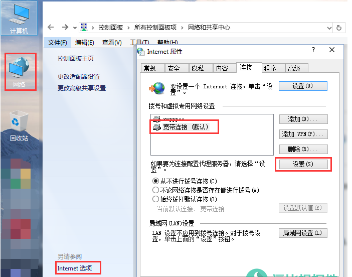
然后你是 直接电脑连接 猫 拨号上网的用户，就如上图所示打开下图的窗口。
如果你是 路由器连接 猫 上网的用户，就点击上图所示中 下面的 局域网设置 打开下图的窗口。
下图中 上面 红框圈中 的选项是，Shadowsocks客户端的PAC模式
一般正确的格式是：http://127.0.0.1:1080/pac?t=XXXXXXX
下图中 下面 红框圈中 的选项是，Shadowsocks客户端的全局模式
一般正确的格式是：地址：127.0.0.1，端口：1080。
如果，你的下图设置是 空的或者是不正确的（127.0.0.1 是不能变的，端口是可以变的），请修改为正确的IP和端口，并检查Shadowsocks客户端的本地端口设置。
注意：这里的端口既是 Shadowsocks中的 本地端口，是可以改的，不过默认是 1080。
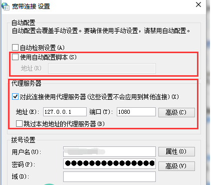
2.2.3、浏览器问题
如果上面的情况都解决了，依然无法使用Shadowsocks的话，估计是浏览器问题了。
大多数浏览器都是默认使用系统代理的，比如：Chrome、Opera等浏览器。
同样，也有一些浏览器是有单独的代理设置 选项，比如：Firefox和国内的几个浏览器。
请自己检查浏览器的 代理设置 是否为 使用系统代理设置，如果不是就改为 使用系统代理设置。
如果没有这个 代理设置选项 或者已经改好了，那么就检查 浏览器扩展。
比较常见的以 Chromium为内核的浏览器，比如：Chrome、Opera、国内的一些所谓的双核/极速浏览器。
都经常会使用以下两个插件来管理代理设置，Proxy SwitchyOmega、Proxy SwitchySharp，因为这两个插件会 接管 浏览器的代理设置，如果设置错误或者不会使用的话，也会导致 Shadowsocks 无法使用，所以可以暂时禁用这两种插件。
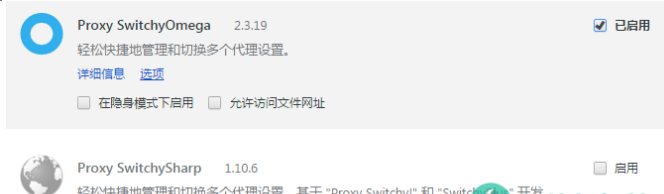
3.1、检查 IP 是否被墙
检查 IP 是否被墙很简单，只要用一下 站长工具-超级Ping 功能检测一下，如果发现国内全部 Ping超时 ，其他国家 Ping正常，那就说明 IP 被墙了，反之没有被墙。
其他情况
Shadowsocks启动代理后提示“无法修改注册表”
一些人会出现Shadowsocks启动代理后提示“无法修改注册表”的问题，大多数情况下是发生在网吧等特殊环境下，有一些软件限制了注册表修改功能。
上面说了，Shadowsocks启动代理后，先是占用1080（默认）端口，然后把Shadowsocks流量映射到127.0.0.1:1080上面，然后在去设置 系统代理设置。而设置 系统代理设置需要修改注册表，所以就会出现上面这个问题。
真个问题有两种解决办法，一种是找到限制注册表修改功能的软件并关掉；一种是 避开这个问题，通过浏览器扩展去管理代理设置，我们这里就讲这个方法。
比较常见的以 Chromium为内核的浏览器，比如：Chrome、Opera、国内的一些所谓的双核/极速浏览器。
都经常会使用以下两个插件来管理代理设置，Proxy SwitchyOmega、Proxy SwitchySharp。我推荐前面那个。
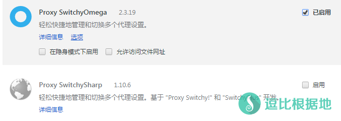
进入扩展的选项页面，然后点新建情景模式>=>输入情景模式名称>=>选择代理服务器>=>点击创建（这个是SS全局的，需要SS PAC模式的请选择PAC情景模式）
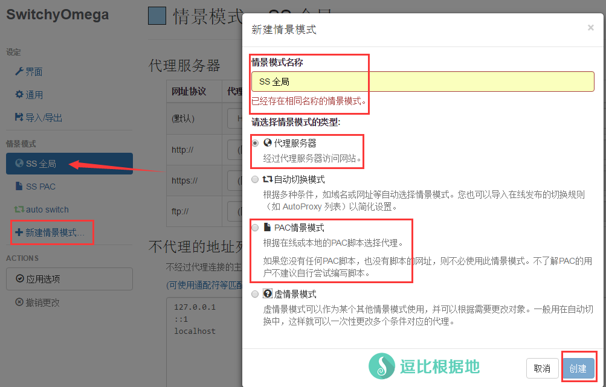
然后SS全局和SS PAC的设置如下：
全局：代理服务器：127.0.0.1，端口：1080
PAC：PAC网址：http://127.0.0.1:1080/pac
当然，这里以默认的1080端口为例，如果不是就自己改。设置完点应用选项，就可以使用了。
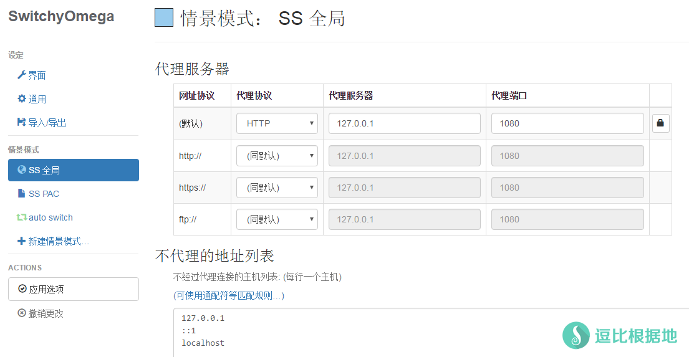
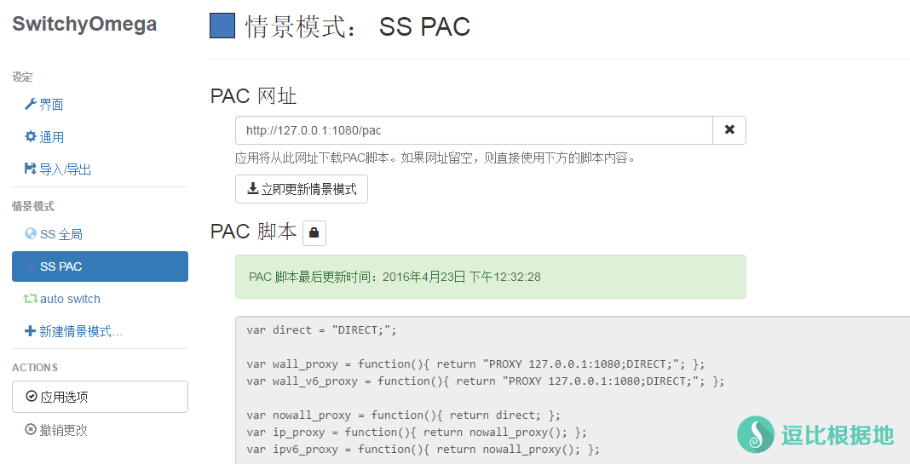
在浏览器的右上角点击Proxy SwitchyOmega扩展图标，选择你需要的全局还是PAC（这时候Shadowsocks客户端不需要去设置对应的全局/PAC），就可以正常使用了。
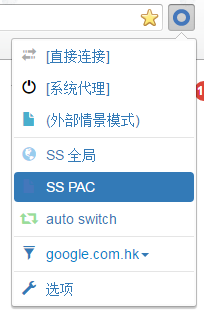